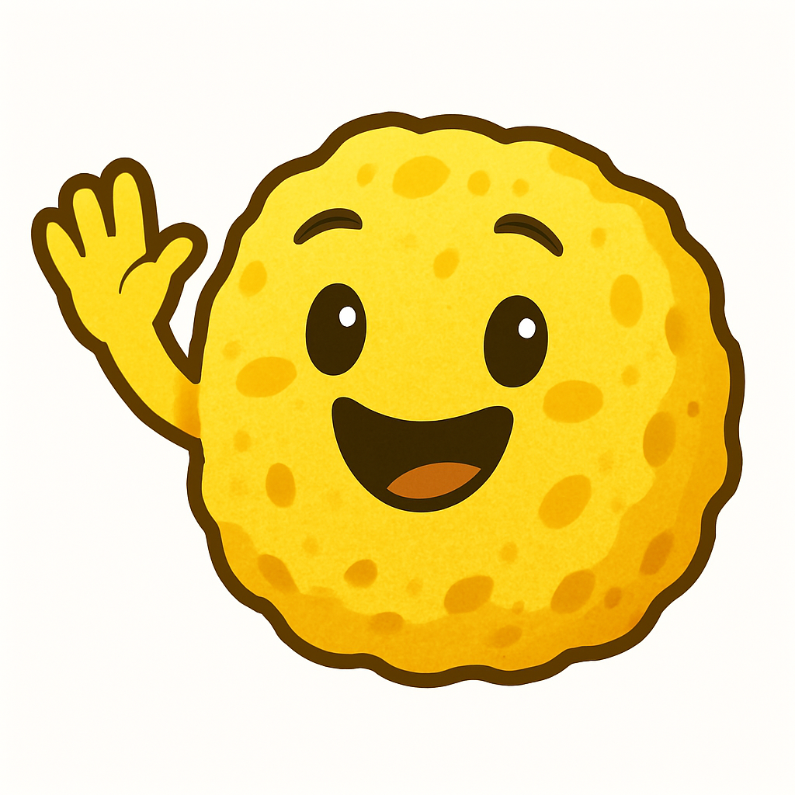
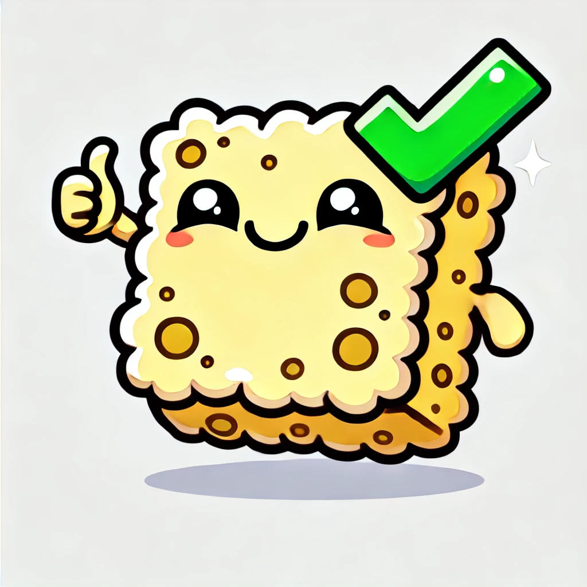
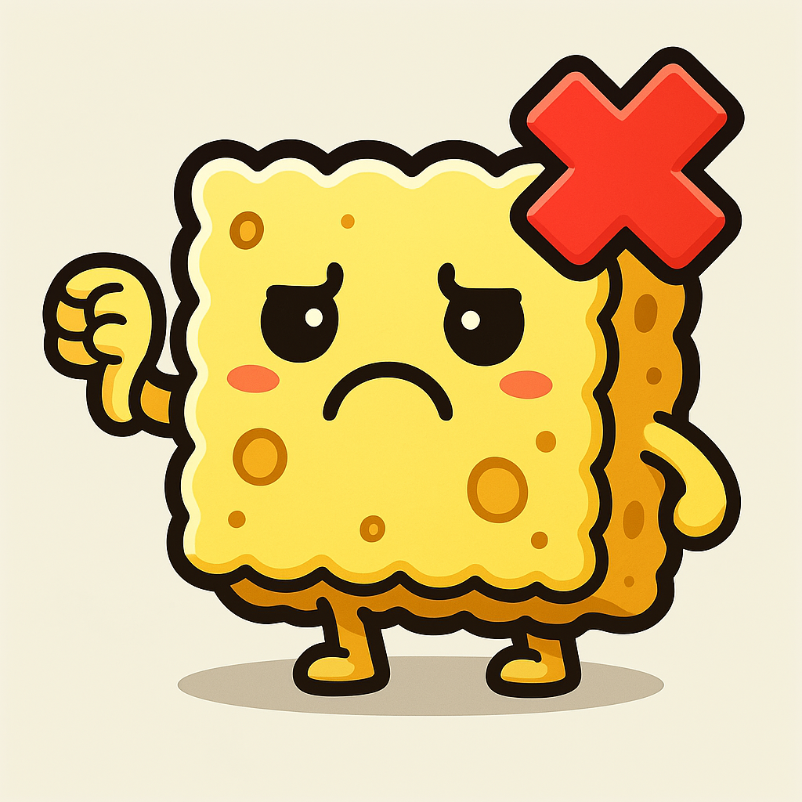

Welkom

 Zeespons Certified™
Zeespons Certified™
Welkom op de volledig subjectieve homepage van het Zeespons Keurmerk.
Dit keurmerk betekent dat ik iets leuk, goed of willekeurig fantastisch vond. Er is geen comité, geen normering. Alleen mijn mening. En da’s genoeg.
Dit keurmerk betekent dat ik iets leuk, goed of willekeurig fantastisch vond. Er is geen comité, geen normering. Alleen mijn mening. En da’s genoeg.

Goedgekeurd: Deze pizza kreeg het keurmerk omdat hij perfect krokant was.
Afgekeurd: Deze pen viel drie keer op de grond zonder reden. ✖Disclaimer: Dit keurmerk is 100% gebaseerd op een persoonlijke mening.
© 2025 Zeespons. Alle rechten voorbehouden.